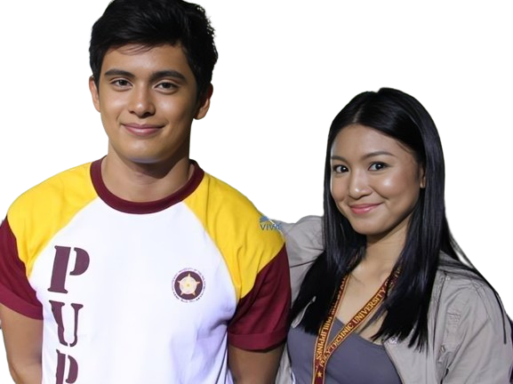

Leny Vitto-Salmingo
PUPSRB Head Director
Welcome to PUP Sta. Rosa Branch!
Welcome to the website of the Polytechnic University of the Philippines - Sta. Rosa Branch.
Here, you can find information about our programs, admissions, and more.
Explore our website to learn more about what PUP has to offer, PADAYON!
ANNOUNCEMENTS
Here are the latest updates and important messages directly from the Office of the University President. Stay informed about upcoming academic schedules, and policy changes that impact our community. Please check back regularly to ensure you are up-to-date with all the latest information from our university leadership:
Just in | Pursuant to the OVPAA
Advisory No. 4 S. 2024,
face-to-face classes in all PUP
campuses will shift to online
classes (synchronous and/or
asynchronous mode of learning)
starting on April 15 to 30, 2024.

Welcome back, mga ka-islang
pantropiko! The PUP SRC Student
Council is thrilled to announce
the official resumption of
face-to-face classes today,
April 11, 2024.
JUST IN | Amid forecast of
high heat index nationwide,
the Office of the Vice President
for Academic Affairs released an
advisory wherein classes in all
PUP campuses will shift to online
classes (synchronous and/
or asynchronous mode of
learning) tomorrow, April 8.
HEADS UP, ISKO'T! In accordance
with Proclamation No. 453,
Malacañang has officially declared
February 9, 2024, as an additional
special (non-working) day.
Furthermore, February 10, 2024,
which marks the Chinese New Year,
will also be recognized
as a special non-working
day countrywide.
TANGLAW NG BAYAN
PUPCET ONGOING
FOR COLLEGE | ACADEMIC YEAR 2024-2025
- Various Programs Available
- Accepting Transferee
- Tertiary Education Subsidy or TES
(Available Upon Passing PUPCET)
UNIVERSITY EVENTS
Note: Click the dots below to see different photos of the events happened in university.Here you will find announcements and updates about major events that encompass all facets of our university life, from academic conventions to cultural celebrations and sporting events. These activities are designed to enrich your university experience and foster a sense of community across our campuses. Keep an eye on this page to stay informed about upcoming events and opportunities to connect with peers, faculty, and alumni throughout the academic year:
Handog mula sa mga maka-
estudyante Para sa mga
estudyante! ⚡ Pack up,
and let`s navigate our
way directly to the most
awaited STUDENT'S DAY this
coming Friday, March 22,
2024 from 12:00 to 3:30 pm
at the PUP SRC Multi-
Purpose Court.
KUMUSTA, ISKO'T ISKA? 🏫⭐
Mark your calendars, Isko't
Iska for the Iskolar ng Bayan
KumuStahan this coming March
8, 2024 at the PUPSRC Multi-
Purpose Covered Court from
8:00 a.m. until 11:00 a.m. A
platform to share their concerns,
reflect on their experiences,
and cherish the memories made
throughout the entire First Semester
of the Academic Year 2023-2024.
📢 HETO NA! Heto na, heto na,
haaaaaa! And now, we're back
to the campus—Second Semester
A.Y. 2023-2024 is just around
the block! In high spirits and
good vibes, the PUP SRC Student
Council officially brings you
the Balik Sinta Program 2024
tomorrow, February 28, 2024
starting at 9:30 AM to 12:00 NN.
'SINTA' OH KAY GANDANG UMIBIG
SA'YO...💕🎶 Brace yourselves
for a rollercoaster of fun as
our beloved Polytechnic University
of the Philippines - Santa Rosa
Campus is turning 21 and we're
about to embark on a week-long
celebration of joy, excitement,
and unity! 🎢✨